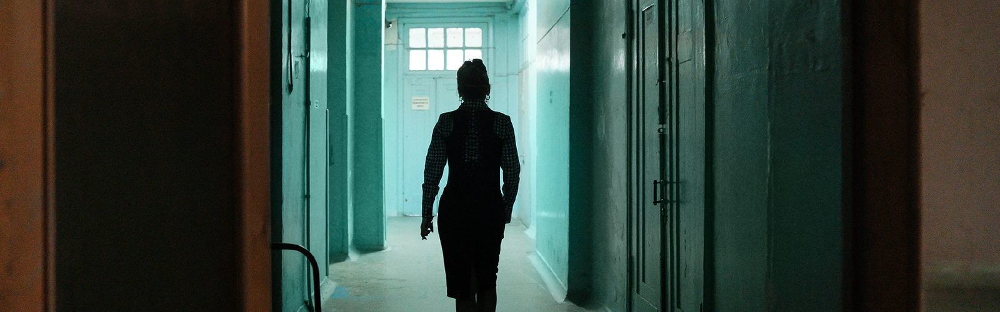
Not to interrupt the experiment: the heroes and heroines of the Kharkiv Institute of Endocrine Pathology
01.05.24
The scientific building of the Institute of Endocrine Pathology is located in the center of Kharkiv, which has been shelled about ten times during the full-scale war by the Russians.
The building was constructed in 1929 based on a project by the renowned Ukrainian architect Viktor Estrovich. In November, the plywood sheets covering all the windows draw attention.
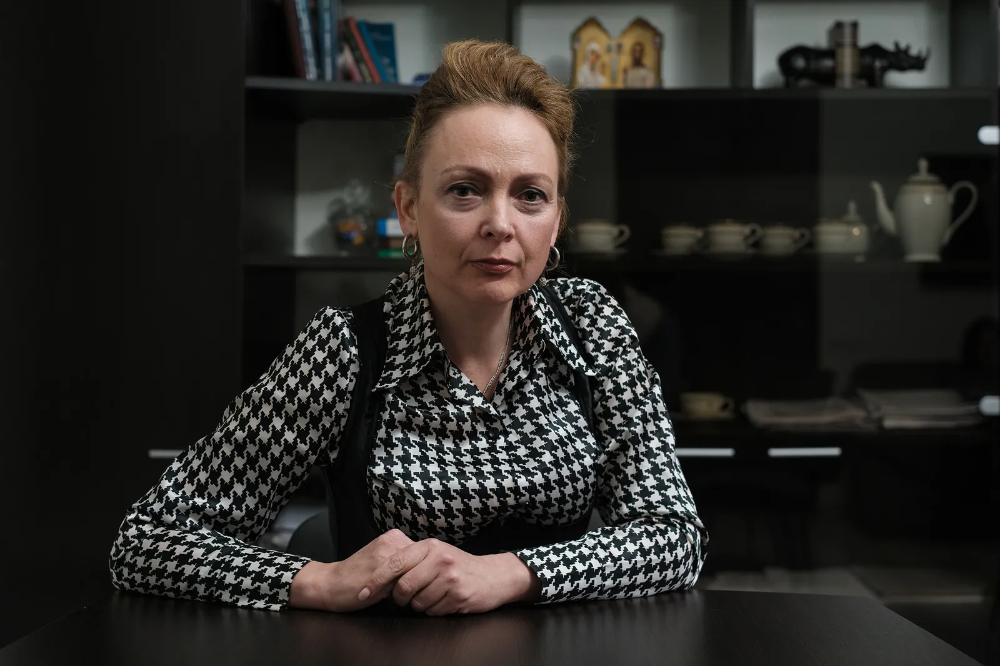
In the Institute museum, we are shown fragments from various parts of the building damaged by shelling. "This one is from Rymarska Street, where our clinic is located. This one is from Hurevicha Street, where the second clinic is. We discarded 90% of the fragments; this is just a part," explains the director of the Institute, Doctor of Medical Sciences Kateryna Misyura.
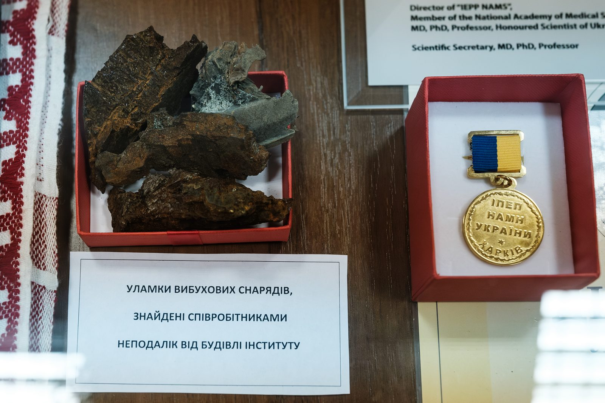
Small fragments are displayed under protective glass, and next to them is a medal.
— In March, we were supposed to host the annual Danilevsky Readings. We award a medal for the best scientific presentation. In 2022, for the first time in 20 years, we did not hold these readings, explains Kateryna.
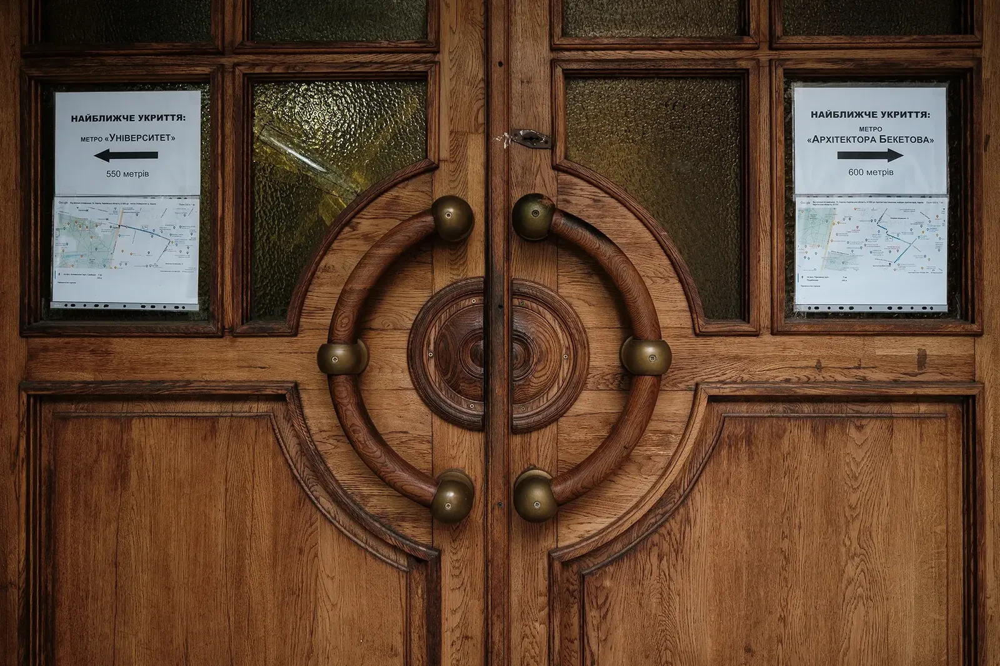
The Institute of Endocrinology, as it is commonly known, was founded in 1919 by the Ukrainian physiologist Viktor Danylevsky, after whom the institution is named. The institute's staff still takes pride in the founder, offering to take photos of his portrait in the museum.
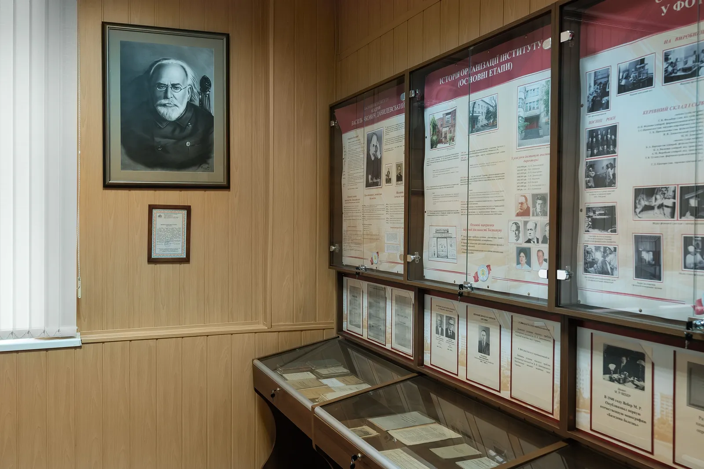
At the beginning of his career, Danilevsky was interested in brain waves and wrote several significant publications on the topic. Later, in the first half of the 20th century, research in this field led to the development of EEG. At that time, Danylevsky was already studying endocrine glands. He was a globally recognized scientist who wrote over 200 scientific works. Some of the titles stand out for their Kharkiv idealism of the last century: "Soul and Nature," "Feelings and Life," "Work and Rest," and so on.
"Here is our hero. Here is our heroine"
During a two-hour conversation, Kateryna Misyura introduces us to a dozen employees of the Institute, sometimes adding, "This one is a hero, this one is a heroine."
— Here is Yevhenia Mykhailivna. In March, she said, "I'm sitting in Saltivka, it's scary, but what can I do? I'm writing articles." In March 2022, she wrote three scientific articles.
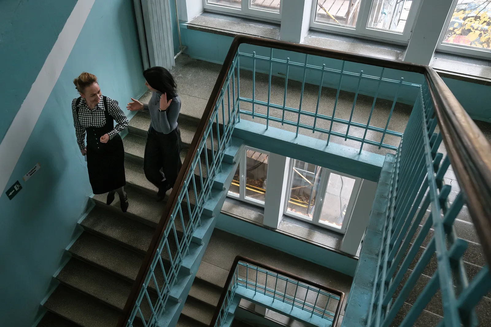
— And here are the people who lived in the Institute because they needed to continue the experiment.
One of the questions the Institute is studying is how stress experienced by a woman during pregnancy affects the reproductive system of her children. The Institute studies the development of diseases and also develops drugs that can mitigate the effects of stress. This is one area of research, and the main questions the institution addresses are:
Drug development.
Research on the impact of stress.
Research on diabetes.
Surgical endocrinology.
Genetic research on diabetes in the entire Eastern European population.
About 400 people work at the Institute.
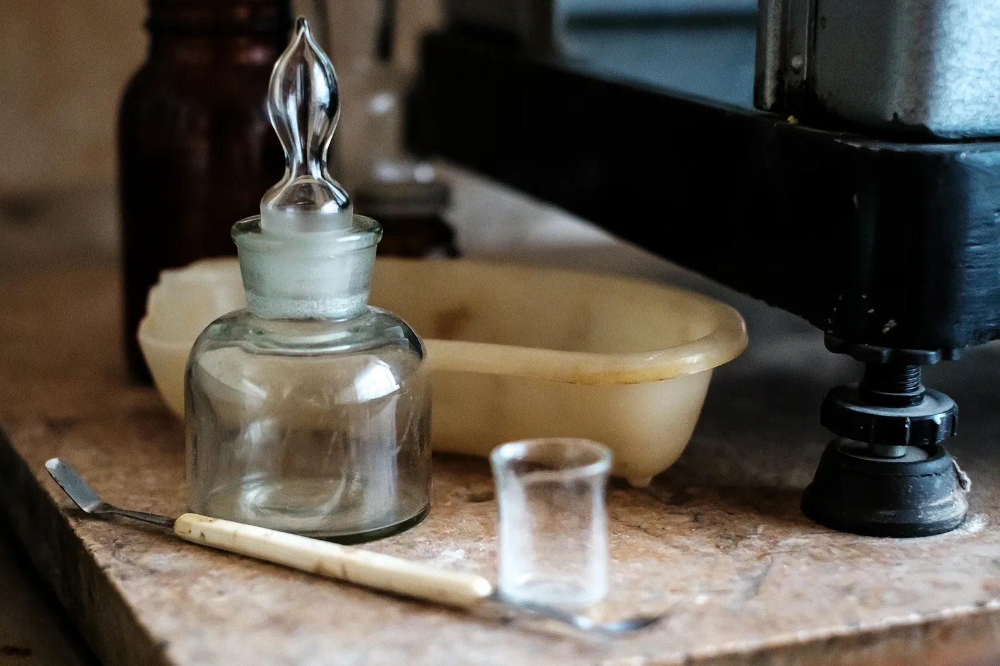
— In February 2022, we already had 10-12-month-old offspring of rats that had been experimentally subjected to stress. We administered a drug developed by our pharmacologists to pregnant rats based on melatonin. The goal of the experiment was to eliminate the negative effects of chronic stress on the state of the reproductive systems. Now, we are observing the testes and ovaries of the offspring of the test animals, comments Tetiana Bondarenko, senior researcher, candidate of biological sciences.
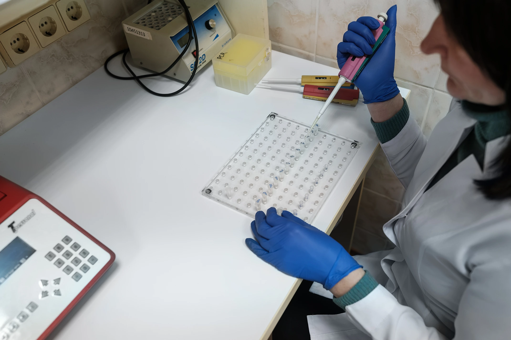
The Institute has been studying the impact of stress on reproductive organs since 2005. In 2021, a separate experiment began using the developed drug. It was supposed to conclude in 2023, and if the war had caused it to be stopped, the whole experimental year would have been lost, and everything would have to be restarted. The scientific team decided not to do that, and now they are already evaluating the research and preparing scientific conclusions.
"Close the doors, we're keeping warm here"
In the vivarium — the room where laboratory animals are kept and bred — we went down at the end of the conversation, having managed to visit various laboratories and several floors. The room turned out to be the warmest.
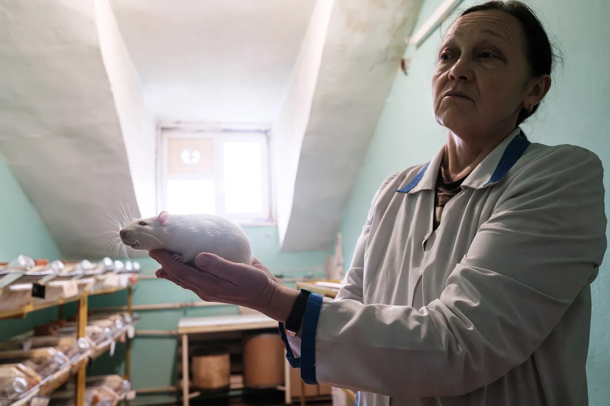
"Close the doors because the heat is escaping, we're keeping warm here," is the first thing we hear as we enter, not yet seeing either the vivarium or Lyudmila Ivlevova, its head, who greets us. In the entire building of the Institute, heating was not yet turned on at the beginning of November — to save energy. But in the vivarium, they maintain a stable temperature of 18–22 degrees. "Rats, mice can't survive without warmth," says Lyudmila.
Providing food for the animals in the first months of the full-scale war was one of the most challenging tasks. Volunteers brought food until May: bran, two bags of wheat from some harvest warehouses, expensive food. The Institute even expressed gratitude on its website for this help.
The ability to conduct experiments in the vivarium, as well as clinical trials of medications in its clinics, allows the Institute to invent new drugs and develop treatment methods. Currently, six medications are being developed, including for the following problems:
Treatment of thyrotoxicosis — a condition that occurs with excessive hormone secretion.
Reducing metabolic disorders in people with diabetes.
Treatment of hormone-dependent diseases of the reproductive systems.
The Kharkiv Institute of Endocrinology is the only Ukrainian institution that develops medications in the field of endocrine pathology and conducts preclinical and clinical trials. This is a full cycle of development not available in any other Ukrainian institution. One of the interesting fields that the Institute is also involved in is the study of diseases at the genetic level and the development of medications depending on the genotype of a particular person. Thanks to such research, future treatment will be conducted like this: first, they determine the individual's genotype, and then they select personalized treatment.
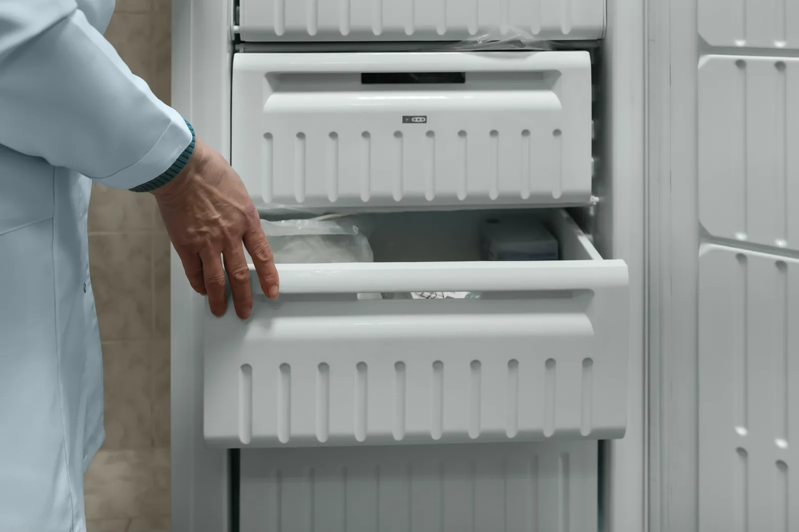
The Institute's gene bank, which housed samples from 1,000 people, was also affected by the war.
— We were without electricity for 4–5 days. The genetic material bank flooded. This was a database collected over 15 years: we periodically invited people from whom we collected samples, monitored their condition, and updated the data, comments Alla Kolesnikova, senior researcher. Currently, most samples have been irreversibly destroyed, only part could be saved.
When the city started being shelled and the Institute needed help, the management wrote 56 letters to various European institutions. They mostly asked for cooperation, not funds. For instance, they offered to use the gene bank of the Eastern European population in exchange for equipment and reagents.
— Our genotype is more prone to endocrine diseases, and this data could have been useful for global research. Only one foreign institute responded to the letters, but with a refusal, comments the director.
The Institute had to cope with financial difficulties and research challenges on its own. When it was necessary to restart equipment after months of inactivity, they turned to colleagues from the Kharkiv Institute of Single Crystals for help because calling Kyiv service engineers was expensive. The clinics continued to operate despite shelling: wards were set up in basements, and patients from the highest surgical department were quickly taken down. Scientific articles are published at their own expense. They buy reagents themselves. Repairing the interiors is done by staff member Natalia, and the director comments: "You can't even see a hundredth of what she has already done."
In March 2022, the Institute was supposed to receive a real-time PCR machine for DNA analysis and a water purification system. The tenders were completed, and the Academy of Sciences approved everything, but with the start of the fighting, the purchase was canceled. Real-time PCR would have allowed the lab technicians to analyze a hundred DNA samples a day instead of seven.
"Forming strategy and implementing changes"
Summarizing the areas of their work, the Institute says their main goal is the nation's health.
Endocrine pathology is one of the leading diseases in all countries worldwide. On average, countries spend 20% of their health budgets on treating the endocrine system, and here, at the Institute, besides scientific and practical research and medications, they develop a plan for preventing endocrine diseases for each branch of medicine. They determine what family doctors and specialist doctors should advise different categories of patients to prevent diseases and save state budget expenses on treating patients. The Kharkiv Institute oversees the work of endocrinology services in nine northeastern regions of Ukraine.
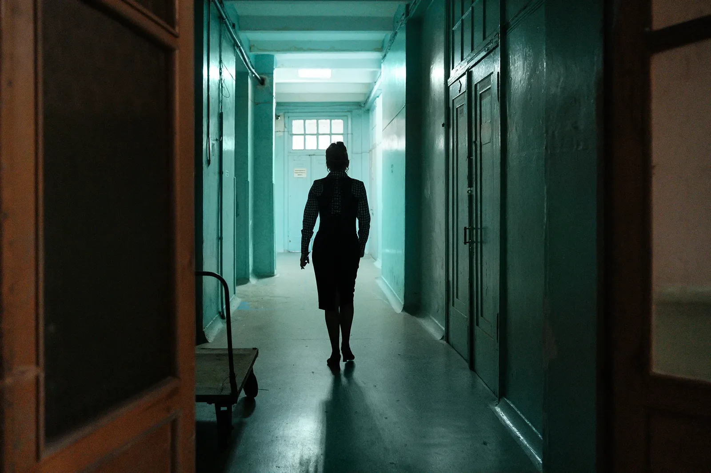
Here, they already warn about mass problems of Ukrainians with diabetes and thyroid issues, and with the support of the state and donors, they would be able to overcome them, just as in the 1950s, they managed to overcome the iodine deficiency problem within seven years by implementing a comprehensive program throughout the country.
Supported by Alfred P. Sloan Foundation and facilitated by IIE.